* 개인적인 공부 내용을 기록하는 용도로 작성한 글 이기에 잘못된 내용을 포함하고 있을 수 있습니다.
이번 포스팅에서는 CCNA 자격증 실습을 위한 Cisco에서 제공하는 네트워크 실습 프로그램인 시스코 패킷 트레이서 (Cisco Packet Tracer) 설치 방법에 대해 다룹니다.
List
#1 Create Account
#2 Download Cisco Packet Tracer
#1 Create Account
아래의 Cisco Networking Academy 공식 홈페이지 주소로 들어갑니다.
Skills for All with Cisco Networking Academy
Free online tech courses backed by Cisco's expertise and connected to real career paths. Discover your future today.
skillsforall.com
홈페이지 메인 화면 우측 상단의 Account 아이콘을 클릭해 줍니다.
가입할 계정의 이메일을 선택합니다. Google 계정 혹은
Cisco Networking Academy (전) 시스코 계정 둘 중에 하나를 선택 가능한데, 저는 처음 가입하는 것 이기에
구글 계정으로 가입했습니다.
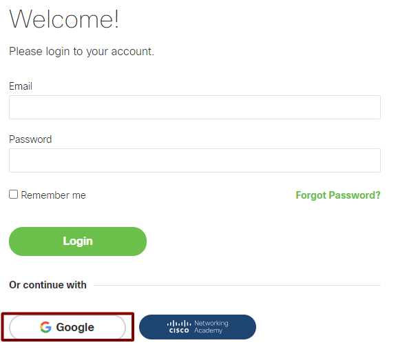
국가와 생년월일을 입력해 주고 Continue를 클릭합니다.
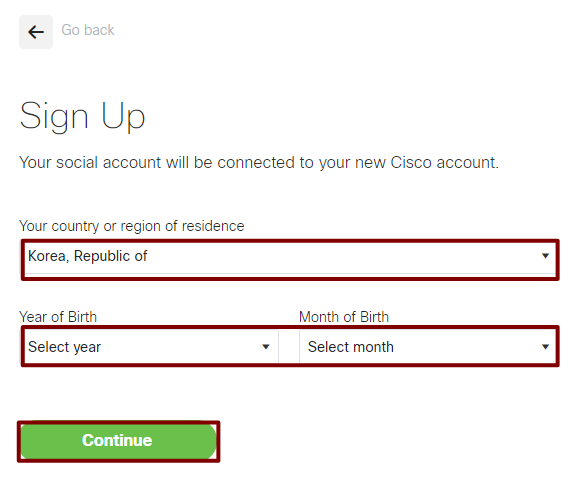
위에서 부터 순서대로 3개의 필수 체크박스 항목을 클릭한 뒤 Accept & Continue 버튼을 클릭합니다.
마지막 4번째 체크박스는 이메일 수신 여부를 위한 항목입니다.
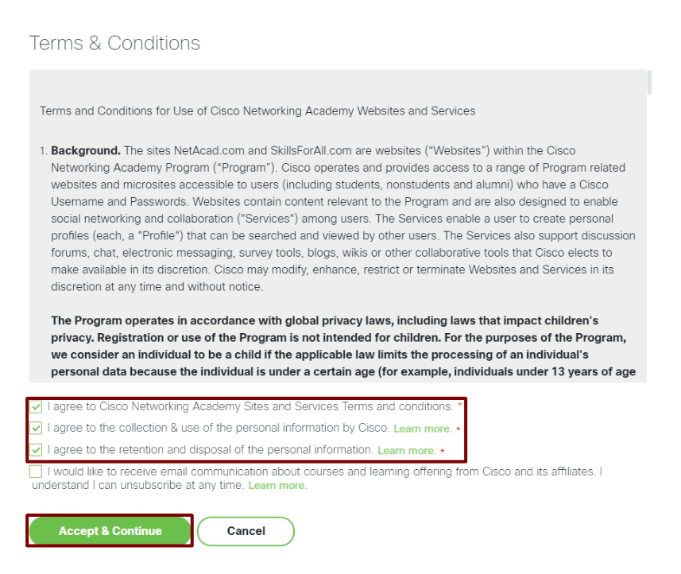
다음 화면이 로딩되면 가입을 성공적으로 끝마친 것 입니다.
Browse catalog 를 클릭하시면 Cisco에서 제공하는 무료 교육영상을 시청할 수 있습니다.
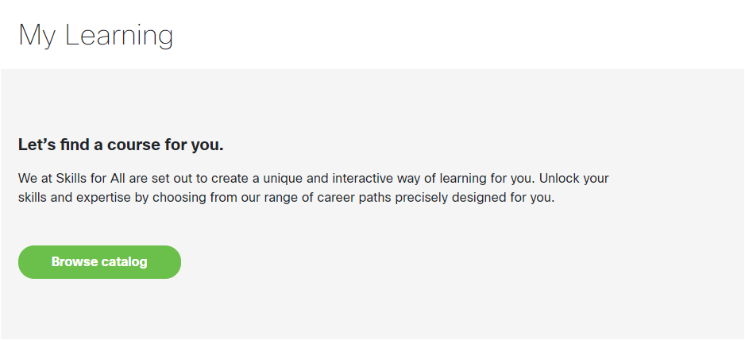
#2 Download Cisco Packet Tracer
앞서 계정을 생성했으니
이번 포스팅의 목표인 Cisco Packet Tracer 를 설치할 준비를 끝마쳤습니다.
아래 URL로 들어가 주세요.
https://skillsforall.com/resources/lab-downloads
Skills for All Resource Hub
Your one-stop for learning resources used within our courses such as hands-on practice activities and our network simulation tool, Cisco Packet Tracer.
skillsforall.com:443
위에 URL에서 접속한 홈페이지에서 스크롤을 내리다 보면
Cisco Packet Tracer 설치를 위한 Learning Resources 탭이 보입니다.
각 운영체제에 맞는 링크를 클릭해 설치해 줍니다.
실행 파일은 대략 200mb 정도로 어느정도 시간이 소요됩니다.
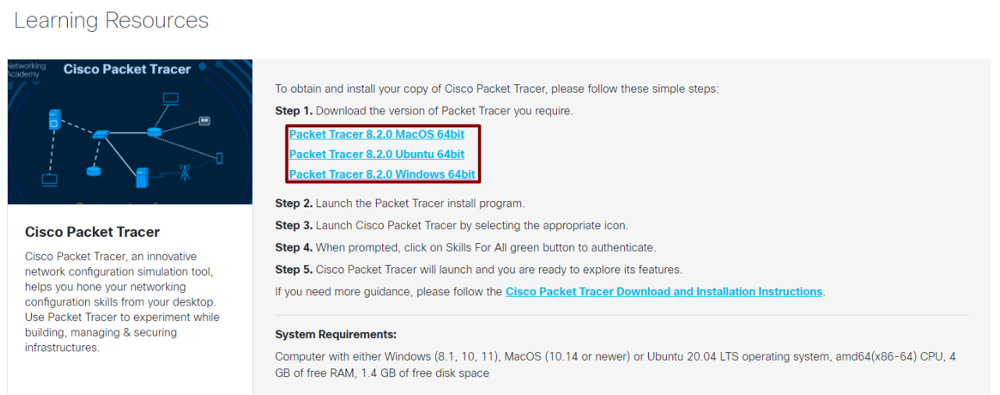
설치 방법은 매우 간단합니다.
계속 Next만 눌러 주시면 됩니다.
License Agreement 라이센스 동의 여부를 묻는 항목입니다.
I accept the agreement (동의) 를 선택한뒤 Next를 눌러줍니다.
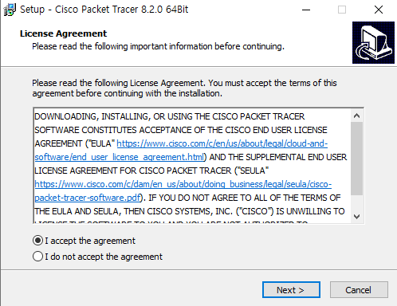
파일 설치 경로를 설정하는 항목입니다.
Next를 눌러줍니다.
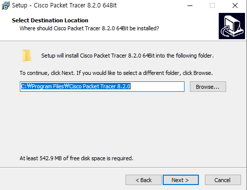
시작 메뉴에 Cisco Packet Tracer 라는 이름으로 추가합니다.
다른 경로에 추가하고 싶다면 Browse...를 선택하셔서 원하시는 경로에 지정하시면 됩니다.
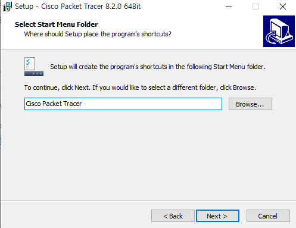
Create a destop shortcut
바탕화면에 바로가기를 만들어 줍니다.
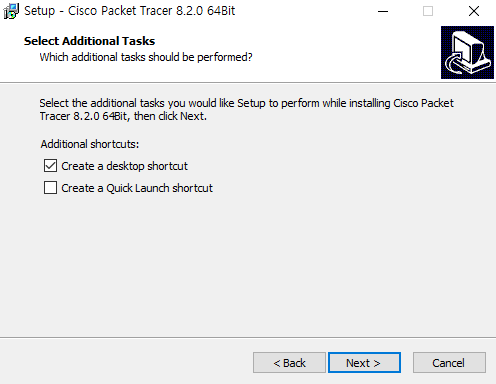
마지막으로 Install을 클릭하시면 설치가 진행됩니다.
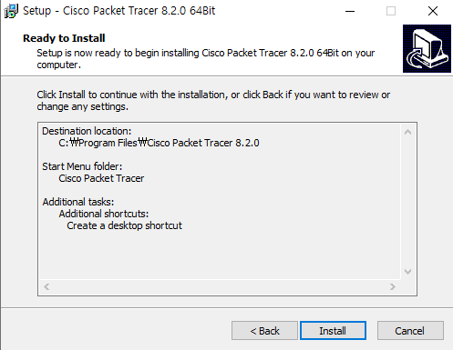
이제 정상적으로 설치되었는 지 확인하기 위해
Cisco Packet Tracer를 실행해 봅시다.
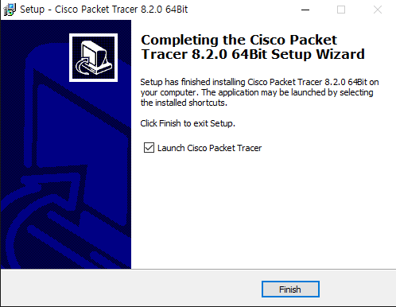
애플리케이션 실행 시 다중 사용자로 실행할 것인 지 묻는 창이 출력됩니다.
혼자 실습하는 용도로 사용할 것 이기에 No를 클릭합니다.
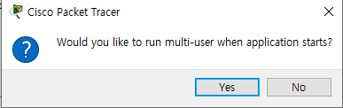
우측의 Skills For All 을 클릭한 뒤 로그인합니다.
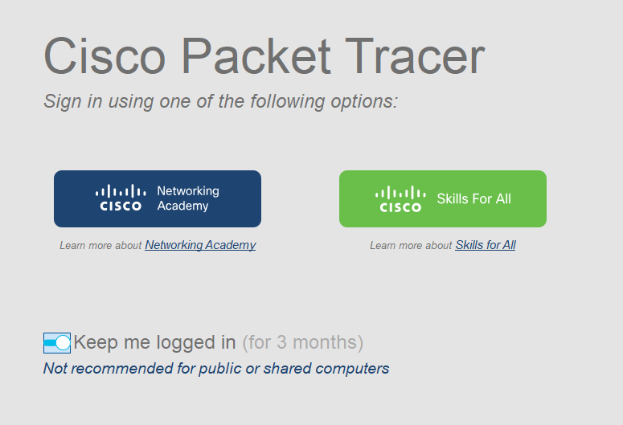
다음과 같은 창이 출력되면 로그인에 성공한 것 입니다.
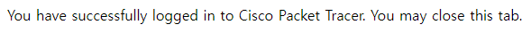